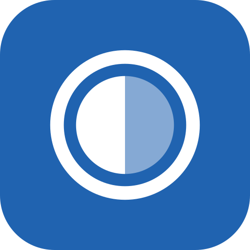

Android RAW photo editor
Reveal
Develop Sony ARW and other RAW files on the phone with a colour-managed GPU pipeline and smart presets. Non-destructive, offline and private.

Develop Sony ARW and other RAW files on the phone with a colour-managed GPU pipeline and smart presets. Non-destructive, offline and private.